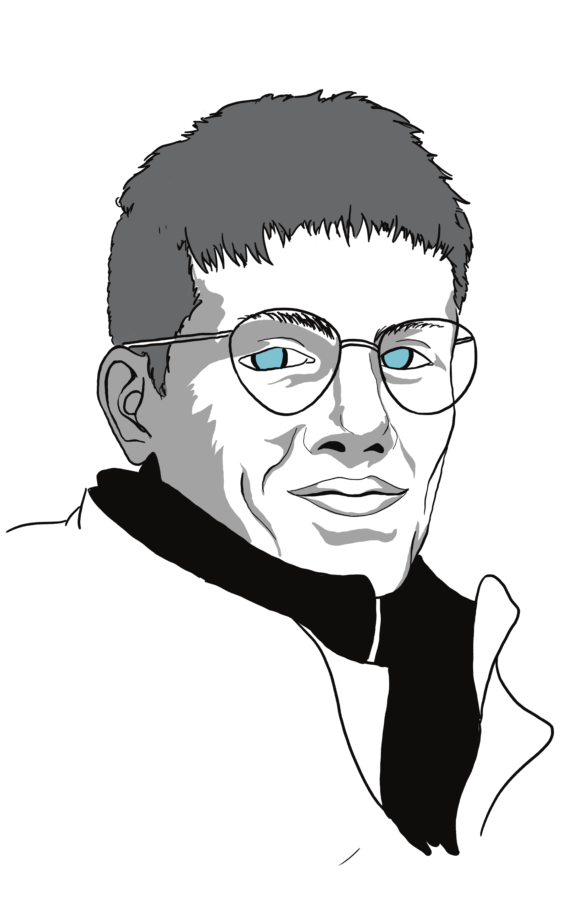

Jolann
Narcisse
Engineer working across software, electronics and interaction design, with a particular interest in technology and product innovation.
Notes from the workbench · 01

Engineer working across software, electronics and interaction design, with a particular interest in technology and product innovation.